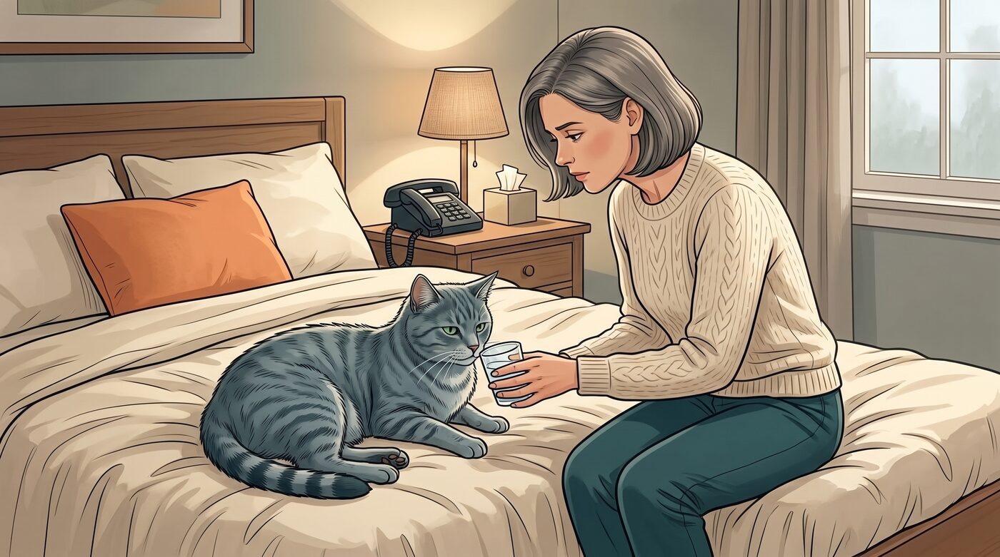
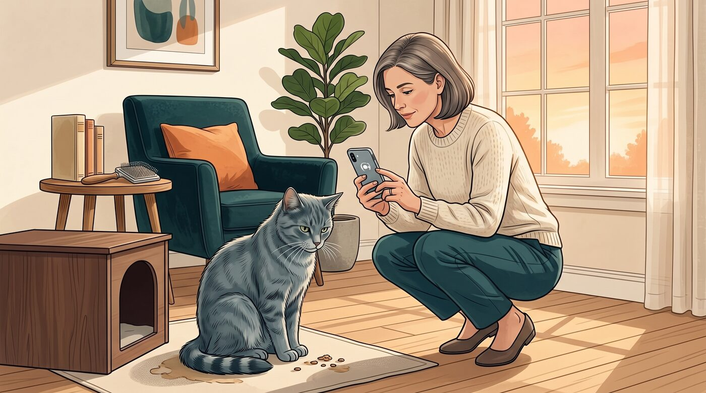
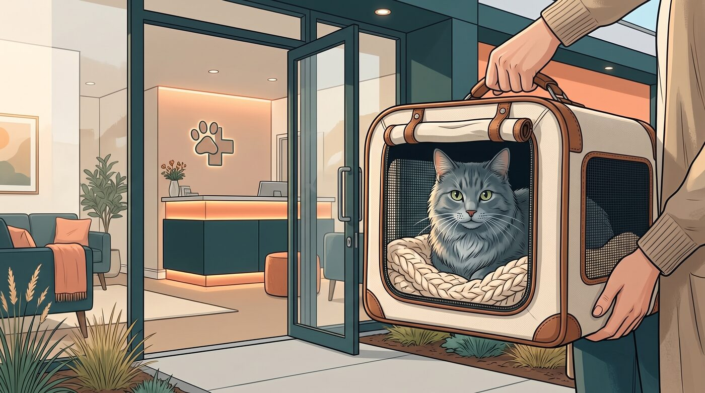
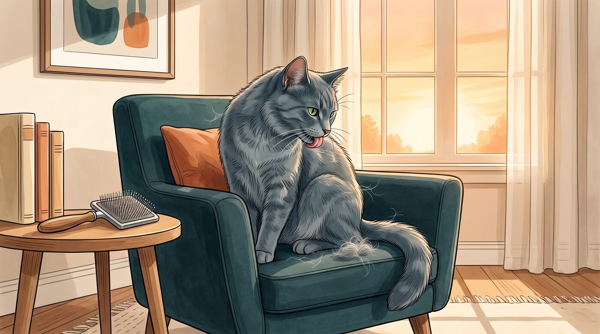
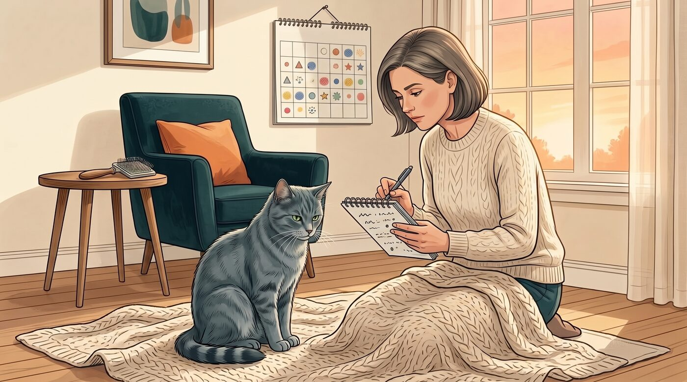
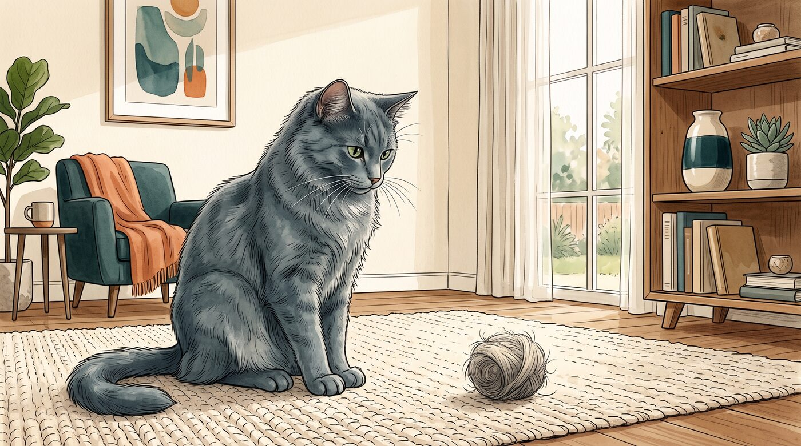

Quem convive com gato provavelmente já escutou aquele som bem característico antes de encontrar uma "surpresa" no tapete: alguns engasgos, o corpo encolhido e, de repente, uma bola comprida de pelos.
Eu confesso que, quando isso acontece uma única vez e o gato volta rapidamente à rotina, muita gente apenas limpa e segue o dia. Mas quando o episódio se repete — ou vem acompanhado de alguma mudança no comportamento — a dúvida aparece: bola de pelo em gato é normal ou pode indicar um problema?
A resposta depende menos da cena isolada e mais do conjunto: frequência, aspecto do vômito, apetite, disposição, fezes e o que mudou na rotina daquele gato.
1. Bola de pelo é comum em gatos

Sim, a formação de bolas de pelo pode acontecer porque o gato se lambe todos os dias. A língua felina tem pequenas estruturas voltadas para trás que ajudam a remover pelos soltos, mas também fazem parte desses fios seguir para a garganta e serem engolidos.
Grande parte desse pelo passa pelo sistema digestivo e sai nas fezes sem que o tutor perceba. Outra parte pode ficar acumulada no estômago, formando uma massa de pelos misturada a secreções digestivas. Quando ela é expelida, nem sempre tem formato de bola: costuma parecer um cilindro comprido, semelhante a um pequeno "charuto" úmido, muitas vezes na cor da pelagem do gato.
Em gatos saudáveis, um episódio ocasional pode acontecer sem deixar consequências. A Cornell University College of Veterinary Medicine informa que alguns gatos eliminam uma bola de pelo a cada uma ou duas semanas sem outros problemas persistentes.
Mas "comum" não deve virar sinônimo de "sempre normal". O que importa não é apenas o comportamento isolado, e sim a mudança em relação ao padrão daquele animal.
2. O que pode aumentar as bolas de pelo

Gatos de pelo longo, como Persa e Maine Coon, costumam engolir mais pelos durante a higiene e podem ter episódios com maior facilidade. Isso não significa que todo gato de pelo curto esteja livre do problema, apenas que a quantidade de pelo ingerida tende a fazer mais diferença em alguns animais.
A troca sazonal de pelagem também costuma aumentar a quantidade de fios soltos pela casa — e, consequentemente, a quantidade de pelo que o gato pode engolir ao se limpar. Nesses períodos, escovar o animal com regularidade ajuda a retirar parte do pelo antes que ele pare na língua e seja engolido.
Outro ponto que merece atenção é o excesso de lambedura. Às vezes, o tutor percebe que o gato está se limpando muito mais do que antes, passando longos períodos lambendo sempre a mesma região ou apresentando áreas com pelo ralo. Isso pode estar ligado a coceira, desconforto de pele, estresse ou outros fatores que precisam de avaliação individual.
Na prática, eu observaria duas perguntas simples: "meu gato sempre se lambeu assim?" e "ele está soltando mais pelo do que o normal?". Essas respostas ajudam a distinguir uma fase pontual de uma mudança que vale investigar.
3. Nem todo vômito com pelo é só bola de pelo

Essa é uma das partes mais importantes. Encontrar alguns pelos no vômito não confirma, por si só, que a causa foi uma bola de pelo. Um gato que vomitou ração, espuma, líquido amarelado ou alimento parcialmente digerido pode ter pelos misturados ali simplesmente porque engole pelos diariamente.
Vômito em gatos pode ter muitas causas possíveis. Alterações alimentares, ingestão de objetos, parasitas, constipação, doenças gastrointestinais e problemas metabólicos estão entre as possibilidades que o médico-veterinário considera ao investigar episódios repetidos.
Também existe diferença entre vomitar, regurgitar e tossir. No vômito, é comum haver náusea, salivação, movimentos repetidos de engasgo e contração da barriga. Na regurgitação, o alimento costuma sair de forma mais passiva e pouco digerido. Já a tosse pode ser confundida com tentativa de colocar uma bola de pelo para fora, principalmente quando o gato abaixa o corpo e estica o pescoço.
Por isso, antes de concluir que "é só bola de pelo", tente reparar no que aconteceu. Se der, grave um vídeo curto do episódio. Parece um detalhe pequeno, mas esse registro pode ajudar muito o veterinário a entender se o comportamento parece vômito, tosse ou outra alteração.
4. Quando o episódio pode ser observado em casa

Um episódio isolado tende a ser menos preocupante quando o gato expulsa uma bola de pelo e logo volta ao comportamento habitual: come, bebe água, usa a caixa de areia, interage e descansa como sempre.
O ponto de referência mais útil não é comparar seu gato com o gato de outra pessoa. É conhecer o seu próprio animal. Há gatos que ocasionalmente soltam uma bola de pelo durante a troca de pelagem e seguem perfeitamente bem. Já um gato que nunca fazia isso e começou a vomitar toda semana merece uma atenção diferente, mesmo que os episódios pareçam "pequenos".
Depois de um episódio pontual, vale acompanhar:
- Se ele voltou a comer normalmente
- Se continua bebendo água e urinando como de costume
- Se está usando a caixa de areia
- Se parece alerta, confortável e interessado na rotina
- Se o vômito voltou a acontecer no mesmo dia ou nos dias seguintes
Observar não significa ignorar. Significa dar contexto ao que você viu, em vez de correr para conclusões ou, no outro extremo, tratar vômitos repetidos como algo inevitável para gatos.
5. Frequência maior pede investigação

A frequência é um dos melhores sinais para decidir se aquela "bola de pelo" deixou de ser um evento ocasional. Se os episódios aumentaram, acontecem várias vezes em pouco tempo ou viraram parte da rotina, vale marcar uma avaliação veterinária.
Há variação entre fontes e entre gatos, mas a orientação prática é clara: vômitos repetidos merecem investigação. A Cornell recomenda avaliação rápida para gatos que vomitam mais de uma vez por semana ou que apresentam outros sinais junto com o vômito. O Merck Veterinary Manual também orienta procurar atendimento quando as bolas de pelo são frequentes ou quando há vômitos recorrentes.
Não é necessário esperar o gato "ficar muito mal" para conversar com o veterinário. Um padrão persistente pode estar relacionado a excesso de pelos ingeridos, mas também pode indicar que há outro problema acontecendo e que os pelos estão apenas confundindo a leitura do tutor.
Anote a data dos episódios, tire foto do material eliminado se for possível e registre qualquer alteração na alimentação, nas fezes, na quantidade de água consumida ou no comportamento. Esse histórico costuma ser mais útil do que tentar lembrar de cabeça quantas vezes aconteceu no último mês.
6. Sinais que não devem ser tratados como rotina
Alguns sinais mudam completamente a urgência da situação. O mais importante deles é o gato fazer força repetidamente para vomitar ou engasgar e não conseguir expelir nada. Esse comportamento pode ter diversas causas e não deve ser presumido como bola de pelo.
Também merecem atenção rápida episódios de vômito acompanhados de apatia, fraqueza, recusa alimentar, perda de peso, diarreia, sangue no vômito, dor abdominal, desidratação ou mudanças importantes na urina. Esses sinais podem indicar um problema que vai além da presença de pelos no estômago.
Uma obstrução intestinal por acúmulo de pelos é incomum, mas pode ser grave. Além disso, objetos como fios, barbantes, elásticos, linhas e pequenos brinquedos também podem causar obstrução e desencadear vômitos. Se você suspeita que o gato engoliu algo, não tente puxar um fio caso ele apareça na boca ou no ânus: procure orientação veterinária imediatamente.
Também não ofereça laxantes, óleos, medicamentos humanos ou produtos "caseiros" na tentativa de fazer a bola de pelo sair. A Cornell alerta que laxantes só devem ser usados com aprovação e supervisão veterinária, porque a causa do problema pode não ser aquela que parece.
7. Quando procurar o veterinário

Procure atendimento veterinário no mesmo dia — ou serviço de emergência, se o quadro for intenso — se o seu gato tiver tentativas repetidas de vomitar sem produzir nada, vômitos sucessivos, não conseguir manter água, demonstrar dor, ficar muito abatido ou parar de comer.
Também é prudente marcar consulta se as bolas de pelo se tornaram frequentes, se o vômito se repete ao longo das semanas ou se você percebe que o gato está emagrecendo, se isolando, lambendo o corpo excessivamente ou apresentando alterações na caixa de areia.
O veterinário poderá examinar o gato e decidir se há necessidade de investigar o trato digestivo, a pele, a alimentação, parasitas ou outras condições. Dependendo do caso, a avaliação pode incluir exame físico, exames de sangue e fezes, radiografias ou ultrassom.
Até a consulta, mantenha água fresca disponível, preserve a alimentação habitual — a menos que o veterinário oriente algo diferente — e tente registrar a frequência dos episódios. Se houver suspeita de intoxicação ou ingestão de objeto, leve a embalagem, o objeto semelhante ou uma foto do que o gato pode ter ingerido.
O mais importante é conhecer o padrão do seu gato
No fim das contas, a melhor forma de lidar com bolas de pelo não é tentar impedir que o gato se comporte como gato. É reduzir o excesso de pelos com escovação adequada, conhecer o padrão dele e perceber quando aquela ocorrência ocasional passa a contar uma história diferente.
Um gato que elimina uma bola de pelo e segue bem pode estar apenas lidando com os pelos que engoliu ao se limpar. Mas um gato que vomita com frequência, perde o apetite ou parece desconfortável está pedindo que você olhe além da bola de pelo.
Este conteúdo é educativo e não substitui uma avaliação veterinária. Se houver mudança súbita ou persistente no comportamento, alimentação, sono, mobilidade, uso da caixa de areia ou outros sinais de saúde do seu gato, procure um médico-veterinário.